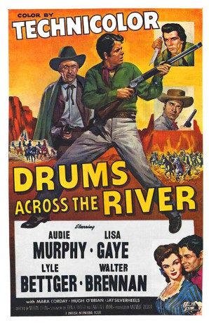

#5024 Adlerschwinge
Alternativ: Drums Across the River
 
 IMDB-Wertung: 6.2 / 10
IMDB-Wertung: 6.2 / 10  Metascore: 0
Metascore: 0 
Als im Westernstädtchen Crown City die Goldader versiegt, brechen gierige Desperados mit den Indianern, denn die sitzen noch auf dicken Goldvorkommen. Auch Gary (Audie Murphy) ist zunächst mit von der Partie. Doch der anfängliche Indianerhasser wandelt sich bald vollkommen....
Jahr: 1954
Dauer: 78 Minuten
FSK: 12
Land: USA Studio: Universal International ®Tonspuren:
Untertitel:
Auflösung: 1080p (1920x1032) Größe: 6379 MB
Genre: Western
Regisseur: Nathan Juran
Drehbuch: Maren Ade
Soundtrack:
Darsteller:
- Audie Murphy als Gary Brannon
 Walter Brennan als Sam Brannon
Walter Brennan als Sam Brannon- Lyle Bettger als Frank Walker
 Hugh O'Brian als Morgan
Hugh O'Brian als Morgan Mara Corday als Sue
Mara Corday als Sue- Jay Silverheels als Taos
- Regis Toomey als Sheriff Jim Beal
 Morris Ankrum als Chief Ouray
Morris Ankrum als Chief Ouray Bob Steele als Billy Costa
Bob Steele als Billy Costa- James Anderson als Jed Walker
 George Wallace als Les Walker
George Wallace als Les Walker- Lane Bradford als Ralph Costa
 Howard McNear als Stilwell
Howard McNear als Stilwell Gregg Barton als Fallon
Gregg Barton als Fallon- Robert Bray als Sheriff Ed Crockett , uncredited
- Phil Chambers als Dave , uncredited
- Edmund Cobb als 2nd Deputy , uncredited
 Steve Darrell als Carmody , uncredited
Steve Darrell als Carmody , uncredited Herman Hack als Townsman , uncredited
Herman Hack als Townsman , uncredited Cliff Lyons als Hank , uncredited
Cliff Lyons als Hank , uncredited Philo McCullough als Doctor , uncredited
Philo McCullough als Doctor , uncredited Jack Perrin als Townsman , uncredited
Jack Perrin als Townsman , uncredited- Billy Wilkerson als Ute Indian , uncredited
- Bob Woodward als Deputy , uncredited
- Chief Yowlachie als Medicine Man , uncredited
- Lisa Gaye als Jennie
 Emile Meyer als Nathan Marlowe
Emile Meyer als Nathan Marlowe- Andy Brennan als Jim Decker , scenes deleted
- Carl Andre als Deputy , uncredited
- Emile Avery als Townsman , uncredited
- Doyle Brooks als Cavalry Scout , uncredited
- Ewing Mitchell als The Colonel , uncredited
- Lee Morgan als (uncredited
- Joseph Morrissey als (uncredited
- Steve Raines als (uncredited
- Harry Raven als (uncredited
- Charles Soldani als Ute Indian , uncredited
- Brick Sullivan als Townsman , uncredited
- Ken Terrell als Red Knife , uncredited
- Tony Urchel als Ute Indian , uncredited
- Rusty Wescoatt als Townsman , uncredited
- Lawrence A. Williams als (uncredited
Datei: X:\HD-Western-1900-1959\Adlerschwinge (1954, FSK12, 1920x1032).mkv seit 19.12.2016
Festplatte: HD Eastern+Western
 Es gibt insgesamt 98 Filme in der Gruppe 'HD-Western-1900-1959'
Es gibt insgesamt 98 Filme in der Gruppe 'HD-Western-1900-1959'